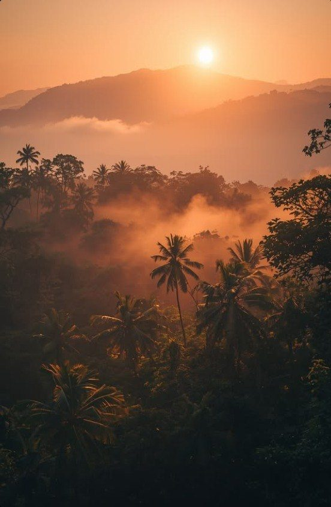

About Charlotte · 3 minute read
My story
By Charlotte

Three times Leo, that is why my logo is a lion. I wish everyone to live their own sun.
I'm Charlotte Tempelaar Journee. I love travel, adventure and a deeper understanding of the world.
I began travelling young. I was only nineteen when I first went to Thailand without my parents, and a whole world opened up. Besides the eight months I spent travelling after my studies, I made sure to leave for a month every year. People who travel often see the world more clearly. Convictions soften, you begin to understand others better, and judgment falls away.
In working life I was ambitious, yet I never found my place in the corporate world. What I missed most was freedom, care, creativity and honesty.
I woke up after my burnout at 26. Before that I was living life to the max, a little too much to the max. I never learned how to step back. I worked to the max, was social to the max, travelled to the max, and burned out at a very young age. It wasn't only because of work. I was pleasing far too much and didn't know who I was at the core. I didn't know what to study, did a lot of things I didn't like, surrounded myself with people who didn't suit me, and never said no. I ended up in the wrong relationship, the wrong job, the wrong house, and with the wrong people.
I had to search for years for answers. Who am I? What am I doing here? Who are my people? What is my purpose? First through books and studies, and then through feeling. How do I actually want to spend my days?
After that I studied almost continuously for fifteen years.
Of course a lot of my personality stayed. I'm optimistic, strong, a bit of a butterfly, fiery, and flowing through life. I can't sit at a desk all day, seven days a week, with other people telling me what to do. I need freedom, my own direction, my own time. I want to be there for my children and husband. I love my cosy home, but I also need to travel. I love beautiful cultures, fabrics, herbs, nature, shapes, colours, and bring a bit or all of them into my products. I've been an extreme animal lover since I was young. I'm always rescuing animals, raising them, or supporting animal organisations.
I've never been a planner. Freedom, for me, is being able to decide in the moment what I feel like doing. I live day by day and prefer not to have a social agenda. On my long travels this was the thing I loved most: having no plan.
The moment I stop planning, I become most creative and everything literally comes toward me.
Things grow and flourish when I don't have a plan. Social appointments are often difficult for me because I'd rather not plan. For a long time I thought this was something immature in me, but it isn't. For work I can plan just fine, still I need many open spots in my agenda to let ideas grow.
I feel others well, but now I let my own feeling come first. I can now clearly feel: is this something for me? Does it feel good? I play with energy. I set clear boundaries and choose a quieter social life nine times out of ten, even though I still love tuning into others now and then. I have a few very good friends with whom I share everything, but I'm not really one for groups. I choose my own direction, and that sometimes means stepping away from what's considered “normal.” As an astrologer I know that no one is the same, so normal doesn't exist.
I feel strong and happy, and I can't wait for all the beautiful things still to come. What I love most is helping people find who they are. My own search was beautiful, and I'm a very open-minded person. Nothing is crazy to me. I love bringing a bit of my freedom and positivity into the world, waking people up a little when they're open to it, and letting others enjoy the beauty that comes my way.
I wish everyone to shine. The most beautiful life, I wish it for all of them.
Letters, now and then
About everything I learn: astrology, energy at home and new pieces from the studio.